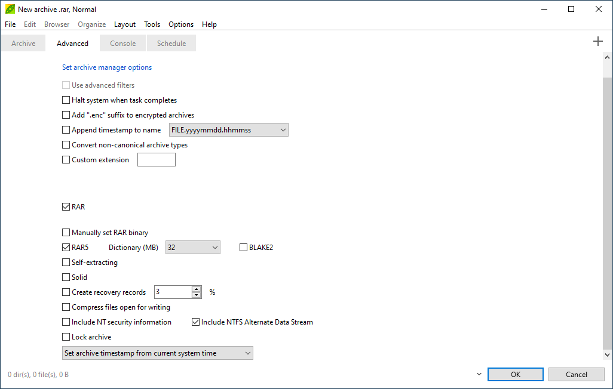

|
RAR is
a
popular file archiving
and
compression format
introduced for WinRAR (Eugene
Roshal, 1995), a file archiver utility released for Microsoft Windows
operating
systems only. RAR compression is based on Lempel-Ziv LZSS and
prediction
by partial matching PPMd/PPMII
(Dmitry Shkarin), which provides very good compression ratio, almost
comparable with 7Z format.
The
format also features data
recovery
capabilities
(if optional recovery records are used while creating the archive), and
optional AES based encryption.
"RAR" acronym stands for "Roshal
ARchive", from the surname of
the
author.
Read more: what is a RAR
file
PeaZip, freeware and open
source archiver utility, can open and extract
RAR files on Linux and
Windows, using the
Open Source code written by Igor Pavlov in 7-Zip and
its POSIX port p7zip project. and
its POSIX port p7zip project.
Additionally, PeaZip can automatically
configure itself to use WinRAR's Rar.exe to create RAR files from
PeaZip's own GUI, but only if WinRAR is installed in the system,
as due RarLab's licensing terms for rar format no third parts utility
can distribute a rar creation tool, unless asking RarLab for licensing
the format.
No
alternative Open Source free RAR archiver utility (rar creator) is
available: UNRAR
is available
as royalty-free and open
source
software for allowing extraction of RAR archives both on Linux and
Microsoft Windows, but with the clause of not reverse engineering the
code
for
implementing RAR compression which prevents development of royalty free
rar archivers & compressors capable to create or add files to said
format.

|
The
non reverse
engineering clause about the RAR
compression algorithm and code apply as well for any rewritten version,
so no Free Software,
royalty free RAR archiver and compressor can be created under current
licensing terms. In other words, no open source alternative exist to
WinRar's Rar.exe
|

|
Consequently, due to RAR's license constrains, no free software can be
written to
be
natively capable of writing RAR archives (which is required both for
RAR
archive
creation, add / update and repairing), unless licensing clause is
circumvented calling (Windows / Wine -only) WinRar's
executable rar.exe itself, that
requires having WinRar (shareware, free for 40 days only) downloaded
and
installed as a separate product.
Please note that WinRar license's time trial legal limitations apply to
any part of the package (as i.e. Rar.exe) as well, even if it does not
display the
warning screen as the main WinRar's GUI executable.
More online resources: RarLab's WinRAR shareware
rar file archiver official
domain, Lempel-Ziv LZSS and prediction
by partial matching PPMd/PPMII
Wikipedia pages.

If WinRar is installed in the system, providing the needed rar archives
creation routines, it is possible to create rar files from PeaZip,
which in that way becomes an alternative application for rar
compression tasks.
Archive format dropdown menu in PeaZip's compression screen allows to
select "Custom" format, which lets the user select an arbitrary
compressor executable, enter command parameters for it, and to
customize the syntax of the generated script string in order to adapt
to the syntax the compressor is expecting.
"RAR" checkbox in
"Advanced" tab of compression screen will switch automatic support for
RAR
format on/off.
This allows using PeaZip GUI
as alternative way to create RAR files: if WinRAR 32 or 64 bit is
installed in the host system PeaZip will display "Custom/RAR" and
autoconfigure itself, by default, to use Rar.exe as compressor.
Due RarLab licensing / distribution terms, it is not possible to
autonomously create archives in RAR format distributing, or creating a
replacement for, Rar.exe, as explained in previous chapter: Rar.exe is
free to use, but it is not free software.


|
Set compression to Custom/RAR format
Chose "Custom/RAR" format in
compression dialog, from there is possible to set basic options as
compression level, file spanning, and set password / keyfile.
Following steps will only be necessary if it is needed to customize the
task further, as PeaZip will take care to automatically configure
parameters for Rar.exe syntax.
|

|
Set advanced RAR
compression options
Go to "Advanced" tab to display more RAR
specific
options: from here is possible to set asdvanced rar compression options
as using the new RAR5
standard ot legacy RAR4, set dictionary size, use BLAKE2 instead of
CRC, create self-extracting rar archive, create solid archive, create
rar recovery records, etc.
|

|
Configure
rar command line parameters
(OPTIONAL) If it is needed to further configure
rar command line parameters it is possible to go to "Console" tab and
see the actual command line
composed for Rar.exe, to further refine the task beyond GUI's
capabilities, or to save it as CLI script for future use.
|
Advantage of using PeaZip as frontend for creation of RAR archives is
the possibility to benefit of unique PeaZip features lacking in WinRAR,
in example support for two factor authentication (password + keyfile),
integrated archive conversion tool, secure deletion after archiving,
easy file manager-like interface for composing the archive layout,
ability to see, customize, and save task's command line, etc...
Employing Rar.exe backend allows PeaZip also to edit existing RAR
archives, adding or deleting files, and modifiyng existing files in
archive.
Synopsis: How to create
RAR files withing freeware applications. Add files to RAR archives,
compress data to WinRar's RAR4 and RAR5 archive formats with PeaZip
free archiver and compression utility, using RarLabs backend rar
compressor tool.
Topics: how to create
rar files
PeaZip > FAQ
> Free RAR archiver, compression utility: how to create rar files
|